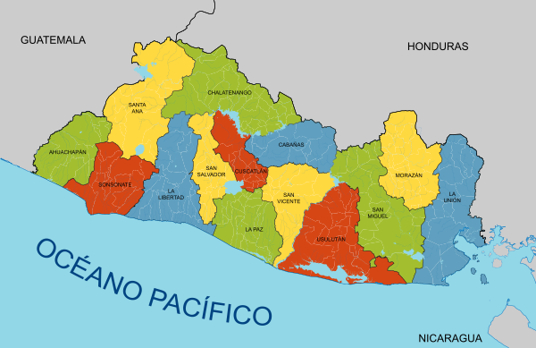

EL SALVADOR
Historia y extensión territorial
El Salvador, oficialmente República de El Salvador, es un país soberano de América Central ubicado en el litoral del océano Pacífico con una extensión territorial de 21 041 km2. En el año 2015 contaba con una población estimada en 6 377 195 habitantes, siendo el país más densamente poblado del continente americano.
Departamentos
| 1.Ahuachapán | 2.Santa Ana |
| 3.San Vicente | 4.Sonsonate |
| 5.Usulután | 6.San Miguel |
| 7.Morazán | 8.La Unión |
| 9.La Libertad | 10.Chalatenango |
| 11.Cuscatlán | 12.San Salvador |
| 13.La Paz | 14.Cabañas |
Lugares turísticos

1. Lago de Coatepeque
2. Playa El Tunco
3. Ruta de las Flores
5. Suchitoto
6. El Boquerón
7. Joyas de Ceren y San Andrés
8. Parque Arqueológico Tazumal
Simbolos patrio
1. Bandera nacional
2. Escudo nacional
3. Torogoz ave nacional
4. Flor de izote flor nacional
5. El maquilishuat arbol nacional